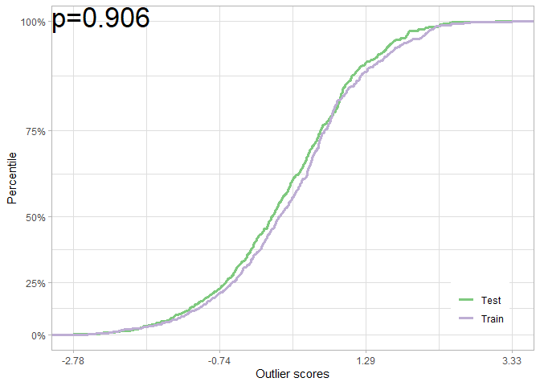

Overview
dsos tests for no adverse shift based on outlier scores. Colloquially, these tests check whether the new sample is not substantively worse than the old sample, not if the two are equal as tests of equal distributions do. dsos implements a family of two-sample comparison which assumes that we have both a training set, the reference distribution, and a test set.
Installation
From GitHub (which includes updates and improvements), install with:
# install.packages("remotes")
remotes::install_github("vathymut/dsos")The package is also on CRAN, although it lags behind. I recommend the package on GitHub over CRAN for now. The package on CRAN (v0.1.0) will eventually be updated to reflect recent changes. From CRAN, install the package with:
install.packages("dsos")Quick Start
Use simulated outlier scores to test for no adverse shift when the null (no difference) holds. First, we use the permutation test:
library(dsos)
set.seed(12345)
n <- 6e2
os_train <- rnorm(n=n)
os_test <- rnorm(n=n)
null_pt <- pt_from_os(os_train, os_test)
plot(null_pt)
We can also use the (faster) asymptotic test:
null_at <- at_from_os(os_train, os_test)
plot(null_at) In both cases, we fail to reject the null of no adverse shift.
We can repeat this exercise when there is an adverse shift. Again, with the permutation test:
os_shift <- rnorm(n=n, mean=0.2)
shift_pt <- pt_from_os(os_train, os_shift)
plot(shift_pt)Once more, with the asymptotic test:
shift_at <- at_from_os(os_train, os_shift)
plot(shift_at)We would reject the null of no adverse shift in both cases: the test set is worse off when compared to the reference (training) scores.
Custom scoring functions
We can use dsos to test for adverse shift on the iris dataset. Here, the outlier scores are from isolation forest for density-based out-of-distribution (OOD) detection:
data(iris)
versicolor <- iris[51:100,1:4] # Training sample: Species == 'versicolor'
virginica <- iris[101:150,1:4] # Test sample: Species == 'virginica'
iris_test <- pt_refit(x_train = versicolor, x_test = virginica, scorer = score_od)
plot(iris_test)
dsos also implements a method for confidence-based OOD detection via prediction uncertainty. Users can easily bring their own scores via the scoring function when needed.
Reference
To cite this work and for technical details, please refer to the paper. Sample Bibtex is given below:
@inproceedings{kamulete2022test,
title = {Test for non-negligible adverse shifts},
author = {Vathy M. Kamulete},
booktitle = {The 38th Conference on Uncertainty in Artificial Intelligence},
year = {2022},
url = {https://openreview.net/forum?id=S5UG2BLi9xc}
}